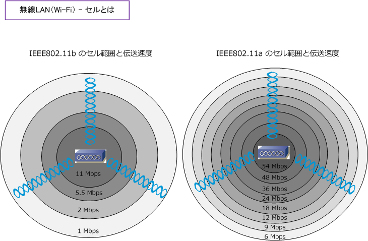
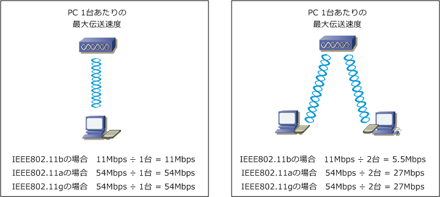

Wireless LAN - Cell
無線LAN - セルとは
無線LANにおいてセルとはアクセスポイントから電波が届く範囲のことです。カバレッジとも呼ばれます。 無線LANクライアントがAPとデータを送受信するためには、このセルの範囲内に位置する必要があります。 なお、電波の信号は距離に応じて弱くなることから、電波の中心から外へ行くほど通信速度が遅くなります。

例えば、IEEE802.11bで通信速度を11Mbpsで通信したい場合、APの信号強度やAP設置フロアの障害物の 状況にもよりますが、APを起点として30メートル以内に無線LANクライアントを配置する必要があります。
IEEE802.11gで通信方式をOFDMで通信する場合、上図のIEEE802.11aと同様のセル範囲と伝送速度の 考え方となりますが、IEEE802.11b 互換性モードで動作している場合は変調方式が異なるので、上図の IEEE802.11b のセル範囲と伝送速度の考え方となります。
無線LAN - 伝送速度
このように無線LANでは、電波信号の強度（セルの範囲）により伝送速度が異なります。そしてこの伝送 速度は、段階的な定められた速度になります。例えば、IEEE802.11b の場合は11Mbpsのセル範囲よりも 外に位置する無線LANクライアントの通信速度は少しずつ遅くなるのではなく、規格上の理論上の速度は 11Mbpsの次はいきなり5.5Mbpsとなります。無線LANクライアントは「フォールバック機能」によって、 信号強度に応じて伝送速度を自動調整します。以下はIEEE802.11b / a / g の伝送速度の一覧となります。
| 伝送規格 | 伝送速度 |
|---|---|
| 802.11b | 11Mbps/ 5.5Mbps/ 2Mbps/ 1Mbps |
| 802.11a | 54Mbps/ 48Mbps/ 36Mbps/ 24Mbps/ 18Mbps/ 12Mbps/ 9Mbps/ 6Mbps |
| 802.11g | 54Mbps/ 48Mbps/ 36Mbps/ 24Mbps/ 18Mbps/ 12Mbps/ 11Mbps/ 9Mbps/ 6Mbps/ 5.5Mbps/ 2Mbps/ 1Mbps |
※ IEEE802.1g のセル範囲に対する理論上の伝送速度は、変調方式により上記で記載した以外の伝送速度になる場合もあります。
伝送速度で注意すべきことがもう1つあります。IEEE802.11b / a / g での理論上の最大伝送速度は それぞれ、11b = 11Mbps、11a = 54Mbps、11g = 54Mbpsですが、この値は1台のAP配下にいる 全ての無線LANクライアントで共有する必要がある速度です。例えば1つのAPの配下に2台の無線LAN クライアントがいる場合、11b 規格なら11Mbpsの速度を2台のPCで共有して通信する必要があります。

有線LANの場合、HUBの1ポートに対して10/100/1000Mbpsといったように占有して使用できましたが、 無線LANの場合、物理的に分割が不可能な「電波」を共有する必要があるからです。ただし、実際には それぞれの無線LANクライアントが送出するトラフィックの量（データの送受信量）は、ばらばらなので 上図のように無線LANクライアントの台数に応じた均等な伝送速度になりません。
1つのAPに複数の無線LANクライアントが接続する環境で、無線LANの CSMA/CA がある瞬間において アクセスポイントが通信する無線LANクライアントは1台とはいえ、その「ある瞬間に」1台の無線LANの クライアントが最大速度 (11b = 11Mbps、11g = 54Mbps、11a = 54Mbps) を使用できる訳ではない。
複数台の無線LANクライアントがいる以上、CSMA/CA方式により交互に通信を行うことから待ち時間が 発生することで1秒間に転送できるビット数（= bps）は遅くなります。WLAN端末一台にどのくらいの 通信速度が必要なのか通信要件を確認してAP数やAPに対するWLAN端末の接続制限数を検討しましょう。